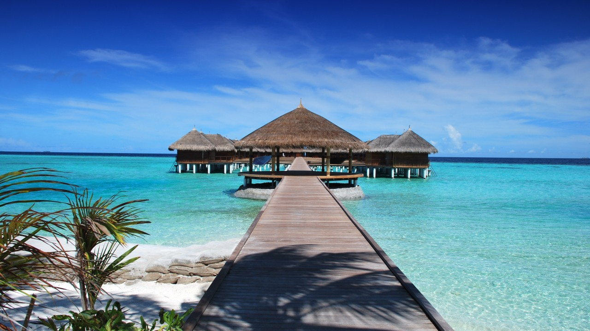
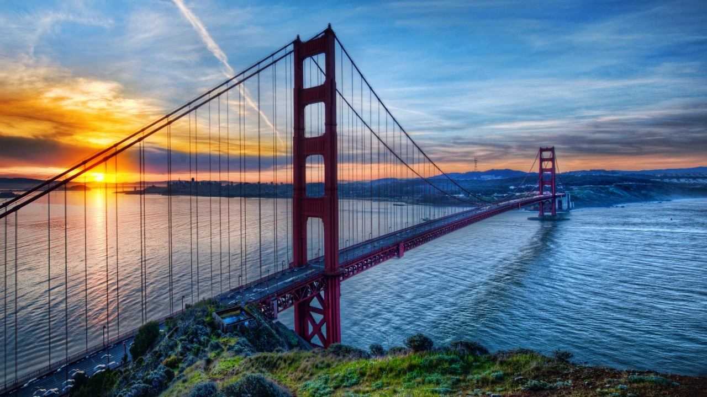
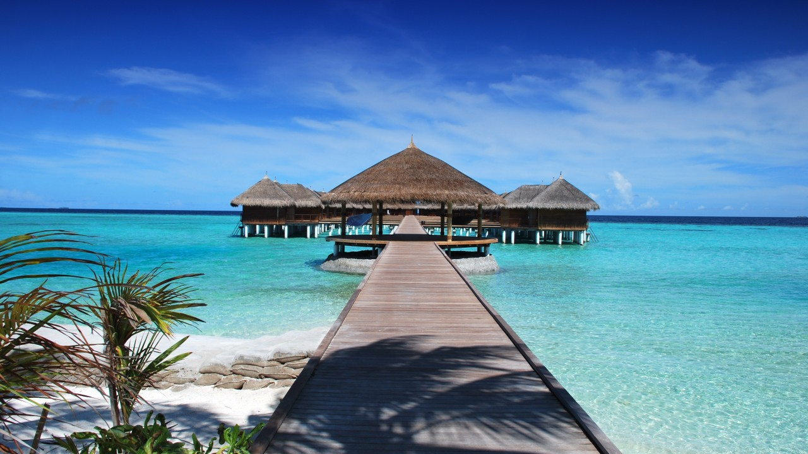
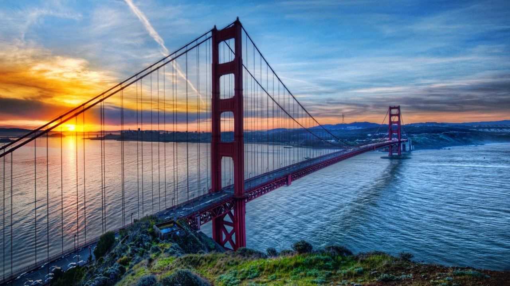

Ngày 1
Sáng: Tập trung tại sân bay quốc tế Tân Sơn Nhất/Nội Bài và làm thủ tục lên chuyến bay đến Paris.
Chiều: Đến sân bay Charles de Gaulle, xe đón đoàn và đưa về khách sạn nhận phòng.
Tối: Thưởng thức bữa tối tại nhà hàng địa phương và nghỉ đêm tại khách sạn
Ngày 2
Sáng: Tham quan Tháp Eiffel - biểu tượng của Paris, chụp ảnh lưu niệm.
Chiều: Tham quan Bảo tàng Louvre - nơi trưng bày những tác phẩm nghệ thuật vô giá.
Tối: Du thuyền trên sông Seine, ngắm nhìn Paris về đêm.
Ngày 3
Sáng: Tham quan Cung điện Versailles - công trình kiến trúc hoàng gia nguy nga.
Chiều: Tham quan vườn Versailles với các đài phun nước và tượng điêu khắc tuyệt đẹp.
Tối: Trở về Paris, dùng bữa tối và tự do khám phá thành phố về đêm.
Ngày 4
Sáng: Khám phá Nhà thờ Đức Bà Paris (Notre-Dame de Paris) - một kiệt tác kiến trúc Gothic.
Chiều: Dạo bộ và mua sắm tại khu phố Le Marais, nổi tiếng với các cửa hàng thời trang, quán cà phê và bảo tàng nhỏ.
Tối: Thưởng thức bữa tối tại một nhà hàng đặc sản Pháp và thưởng thức chương trình biểu diễn cabaret tại Moulin Rouge.
Ngày 5
Sáng: Tham quan Bảo tàng Orsay - nơi trưng bày các tác phẩm nghệ thuật từ thế kỷ 19 và đầu thế kỷ 20.
Chiều: Ghé thăm Quảng trường Concorde và Đại lộ Champs-Élysées, tận hưởng không khí sôi động và mua sắm tại các cửa hàng sang trọng.
Tối: Dùng bữa tối tại một nhà hàng địa phương, sau đó thăm quan tháp Montparnasse để ngắm toàn cảnh Paris từ trên cao.
Ngày 6
Sáng: Tham quan Khu phố nghệ thuật Montmartre, leo lên đồi để chiêm ngưỡng Vương cung thánh đường Sacré-Cœur và tham quan quảng trường Tertre với các họa sĩ đường phố.Chiều: Dạo quanh Công viên Luxembourg, một trong những công viên đẹp nhất Paris, nơi du khách có thể thư giãn và ngắm cảnh.
Tối: Dùng bữa tối chia tay tại một nhà hàng sang trọng, thưởng thức ẩm thực Pháp lần cuối trước khi chuẩn bị hành lý và nghỉ đêm tại khách sạn.
Ngày 7
Sáng: Tập trung tại sân bay quốc tế Tân Sơn Nhất/Nội Bài và làm thủ tục lên chuyến bay đến Paris.
Chiều: Đến sân bay Charles de Gaulle, xe đón đoàn và đưa về khách sạn nhận phòng.
Tối: Thưởng thức bữa tối tại nhà hàng địa phương và nghỉ đêm tại khách sạn